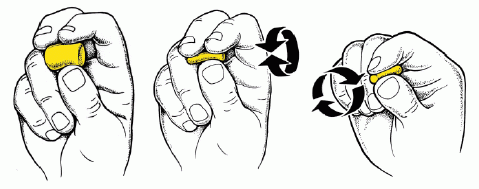
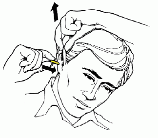
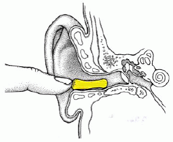
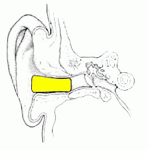

Einsetzen von Gehörschutzstöpseln
Gehörschutzstöpsel aus Schaumstoff müssen vor dem Einsetzen in den Gehörgang durch Drehen zwischen den Fingerspitzen zu einer dünnen Rolle geformt werden.

Der gerollte Gehörschutzstöpsel muss sofort in den Ohrkanal eingesetzt werden. Nur so kann man ihn mit reduziertem Durchmesser richtig positionieren.

Gehörschutzstöpsel lassen sich besser in den Ohrkanal einführen, wenn dieser durch Ziehen am Ohr begradigt wird.

Nach dem Einsetzen in den Gehörgang ist der Stöpsel so lange mit dem Finger zu fixieren, bis er sich vollständig an den Gehörgang angelegt hat (mindestens 10 Sekunden bzw. nach Herstellerangaben).

Nur bei richtigem Sitz lassen sich die vom Hersteller angegebenen Dämmwerte erreichen.
Abb. 14 Einsetzen von Gehörschutzstöpseln
(Quelle nach 3M)